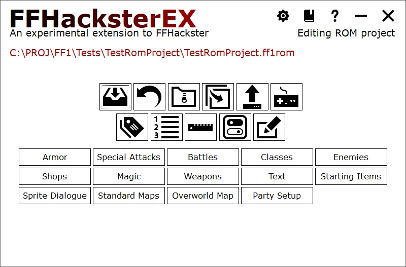
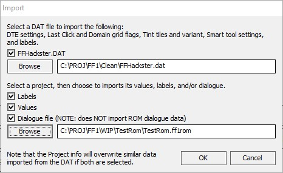
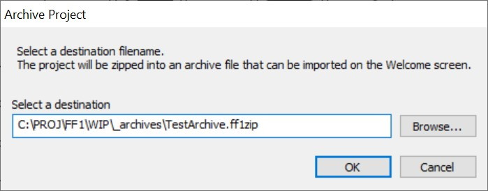
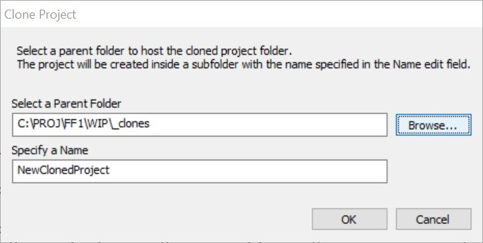
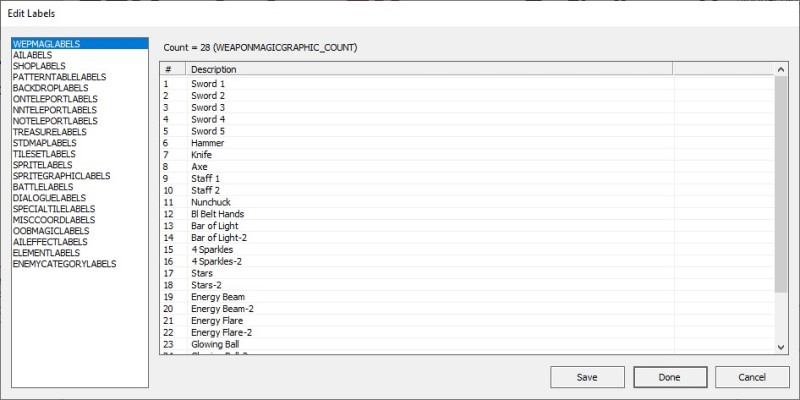
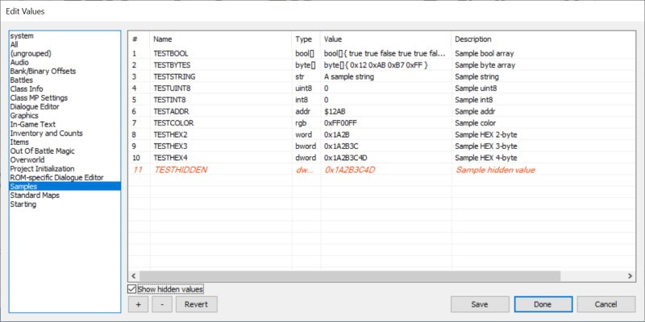
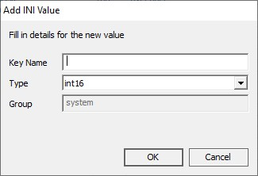
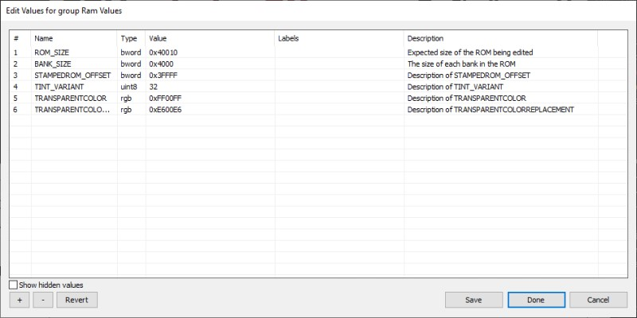
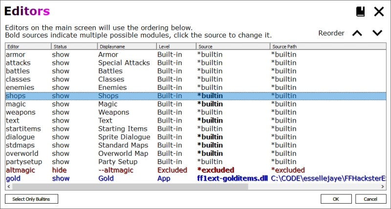

Main Window
Main
The main windows contains icons representing common maintenance functions and buttons representing available editors.
A tray of icons provides access to app settings and help.
Hovering over the editors will display a status tip at the bottom of the screen, briefly describing the editor.

icon-tray]=[
Icon Tray
| The gear icon accesses application wide settings. See App Settings for more information. | |
| The book icon accesses help (if available). F1 invokes help for the page, Shift+F1 for the focused control if available. | |
| The question icon opens the About window. |
import-dat]=[Import FFHackster DAT
Bring in Hackster's DAT settings
Allows importing of content from an FFHackster DAT file. Also allows importing labels, values, and dialogue INI from another project. |

NOTE: Content imported from another project will overwrite content drawn from the DAT file.
revert-archive-clone]=[Revert, Archive, and Clone
Revert, Archive, and Clone
Overwrite the working file(s) with the clean copy/reversion file. For assembly projects, it will replace the contents of the asm folder with the clean copy files. | |
Archive the project to an archive file (a ZIP file with extension .ff1zip). Presents a dialog allowing the selection of a filename for the archive. | |
 | |
Clone the current project to a new folder. Select a parent folder, then specify a name for the new cloned project that will be created there. | |
For example:
 |
publish-compile-run]=[Publish, Compile, and Run
Publish, Compile, and Run
| Copies the working ROM to the publish path. | |
Assembly Projects Only Compile the assembly source, which updates the working ROM. | |
| Runs the working ROM with the program specified in App Settings. |
NOTE: the App Setting "Compile before Run" is on by default. if turned off, then you MUST compile an assembly project before running it
to see the updated changes in the game.
The compilation produces the working NES ROM image that's used with the Run button. When you click Run, the working image is run by the EXE specified in App Settings. If you forget to compile it after making assembly changes,
then you'll run the old copy of the working ROM.
edit-labels]=[Edit Editor Labels
Edit Labels
| Edit the labels used throughout the editor. The count variable associated with each group of labels is shown above the list of strings. |
Press CTRL + Numpad Plus Sign (+) to autosize the columns; (each column resizes to fit to its content.

edit-values]=[Edit ROM Values
Edit ROM Values
| Edit the values used in the game and associated tools. Add, Remove, or Revert the values in a given group. Revert will attempt to roll back to a clean copy of the values (from when the project was created) - be careful when using this. |
Press CTRL + Numpad Plus Sign (+) to autosize the columns; each column resizes to fit to its content.
Items in blue are reserved and cannot be deleted.
Hidden items are shown in orange.

| Button | Action |
|---|---|
| Show Hidden Items | Check the box to show hidden items in this group (if any). Items are sometimes hidden by extensions to avoid
destroying original values when overriding editors. This allows you to see any such values here instead of
having to crawl through the values file manually. |
| [ + ] | Adds a value to the current group. Invokes a dialog to collect the name and type of the new value.  |
| [ - ] | Removes the selected value. |
| Revert | Attempts to restore the values to their initial settings at project creation time. Typically used if values have been trashed and you want a fresh start without recreating the entire project. |
Values can have one of the types in the table below.
Some of the values work out to be the same type of data, but have different semantic meanings that can be used by the editor.
e.g. byte and uint8 are both unsigned 8-bit integers, but the editor or an extension can treat the two differently (e.g. use uint8
strictly as an integer and not as bit flags).
Not much of this has been thoroughly used, so results may vary, and there may be some changes here in the future.
| Type | Detail |
|---|---|
| byte | An 8-bit hex value. |
| word | A 16-bit hex value. |
| bword | A 24-bit hex value (byte + word). |
| dword | A 32-bit hex value. |
| addr | A 16-bit hex value, used for RAM addresses. Formatted as $12AB. |
| rgb | A 24-bit hex value that encodes red, green, and blue. Invokes the Color editor. |
| str | A string, used in the values and labels files. |
| bool | A boolean value, true or false. |
| str[] | Array of strings, used in the project and values files. Invokes the array editor. |
| bool[] | Array of booleans (true/false), used in the project and values files. Invokes the array editor. |
| byte[] | Array of hex bytes, used in the project file. Invokes the array editor. |
| intN | A signed 8, 16, 24, or 32-bit integer. |
| uintN | An unsigned 8, 16, 24, or 32-bit integer. |
| hexN | An unsigned 8, 16, 24, or 32-bit integer. Formatted as hexadecimal 0x12AB. |
edit-ram]=[Edit RAM Values
Edit RAM Values
| Edit the RAM values used in the game. Add, Remove, or Revert the values. Revert will attempt to roll back to a clean copy of the values (from when the project was created) - be careful when using this. |
Press CTRL + Numpad Plus Sign (+) to autosize the columns; (each column resizes to fit to its content.
Items in blue are reserved and cannot be deleted.

project-settings]=[
Project Settings
| See Project Settings for more info. |
manage-editors]=[
Manage Editors
| Manages the order and source of editors. Extensions can add custom editors, as well as override or hide existing ones. |

| Type | Detail |
|---|---|
| Editor | The internal name of the editor. |
| Status | The action the editor's selected source will take. An editor can be shown or hidden. |
| Displayname | The name displayed on the main window for editor's selected source. |
| Level | The level (or context) where the editor's selected source is found. Built-In editors are the standard editors inherited from FFH. Custom editors are loaded from DLLs. Missing editors have a filepath, but the file isn't found there. Excluded editors are intentionally hidden/disabled. App editors are in the program folder. ProjExtFolder editors are in the project's Additional Modules folder. Project editors are in the project folder. |
| Source | The name of the editor's selected source. |
| Folder | The path of the editor's selected source. *builtin for the standard built-in editors. *excluded for hidden/removed editors. |
| Move the selected editor up or down, which changes its position in the main window accordingly. |
For more info on extensions, see Extensions.